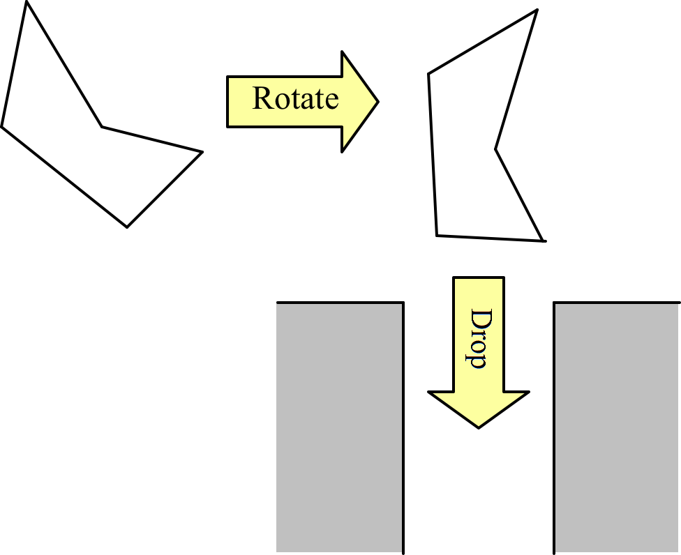

ICPC 2011 World Finals · Problem K
Allied Chute Manufacturers is a company that builds trash chutes. A trash chute is a hollow tube installed in buildings so that trash dropped in at the top will fall down and be collected in the basement. Designing trash chutes is actually highly nontrivial. Depending on what kind of trash people are expected to drop into them, the trash chute needs to have an appropriate size. And since the cost of manufacturing a trash chute is proportional to its size, the company always would like to build a chute that is as small as possible. Choosing the right size can be tough though.
We will consider a 2-dimensional simplification of the chute design problem. A trash chute points straight down and has a constant width. Objects that will be dropped into the trash chute are modeled as polygons. Before an object is dropped into the chute it can be rotated so as to provide an optimal fit. Once dropped, it will travel on a straight path downwards and will not rotate in flight. The following figure shows how an object is first rotated so it fits into the trash chute.

Your task is to compute the smallest chute width that will allow a given polygon to pass through.
The input contains several test cases. Each test case starts with a line containing an integer n (3 ≤ n ≤ 100), the number of points in the polygon that models the trash item.
The next n lines then contain pairs of integers xi and yi (0 ≤ xi, yi ≤ 104), giving the coordinates of the polygon vertices in order. All points in one test case are guaranteed to be mutually distinct and the polygon sides will never intersect. (Technically, there is one inevitable exception of two neighboring sides sharing their common vertex. Of course, this is not considered an intersection.)
The last test case is followed by a line containing a single zero.
For each test case, display its case number followed by the width of the smallest trash chute through which it can be dropped. Display the minimum width with exactly two digits to the right of the decimal point, rounding up to the nearest multiple of 1/100. Answers within 1/100 of the correct rounded answer will be accepted.
Follow the format of the sample output.
3 0 0 3 0 0 4 4 0 10 10 0 20 10 10 20 0
Case 1: 2.40 Case 2: 14.15